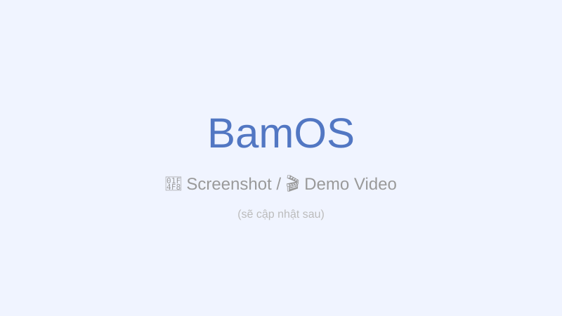

⚙ Tùy chọn khởi chạy Game
Các tùy chọn khởi chạy (launch options) giúp bạn tinh chỉnh trải nghiệm chơi game trên BamOS — từ thiết lập đồ họa, hiệu năng đến tương thích với các game Windows.

📹 Cấu hình launch options cho game (sẽ thêm sau)
🖼️ GameScope
GameScope chạy game trong một micro-compositor Wayland riêng biệt. Điều này cho phép bạn kiểm soát chính xác độ phân giải, VRR, FSR, và cách game hiển thị.
Các tùy chọn GameScope phổ biến
| Tùy chọn | Mô tả |
|---|---|
-w <x> -h <y> |
Độ phân giải trong game |
-W <x> -H <y> |
Độ phân giải cửa sổ output |
-r <hz> |
Giới hạn tần số quét (FPS cap) |
-F fsr |
Bật FSR (FidelityFX Super Resolution) |
--fullscreen |
Chạy ở chế độ toàn màn hình |
--borderless |
Chạy ở chế độ borderless window |
-O |
Bật HDR (nếu màn hình hỗ trợ) |
# Ví dụ: Game ở 720p, FSR lên 1080p, 144Hz
gamescope -w 1280 -h 720 -W 1920 -H 1080 -r 144 -F fsr -- %command%
# Ví dụ: HDR + VRR
gamescope -O --adaptive-sync -r 144 -- %command%
📊 MangoHud
MangoHud hiển thị overlay thông số hiệu năng. Bạn có thể kết hợp với GameScope hoặc dùng riêng.
# Launch option cơ bản
mangohud %command%
# Kết hợp GameScope + MangoHud
mangohud gamescope -w 1920 -h 1080 -r 144 -- %command%
Cấu hình MangoHud
Tạo file ~/.config/MangoHud/MangoHud.conf:
# Hiển thị
fps_only=0
font_size=24
position=top-right
# Thông số
gpu_stats=yes
cpu_stats=yes
ram=yes
vram=yes
fps_limit=144
frametime=yes
# Đồ họa
background_alpha=0.5
alpha=0.8
💡 Mẹo
Nhấn F12 để bật/tắt overlay. Nhấn giữ để thay đổi vị trí.
🧪 Proton GE (GloriousEggroll)
Proton GE là bản Proton do cộng đồng phát triển, bao gồm nhiều bản vá và cải tiến chưa có trong Proton chính thức. Thường cải thiện tương thích cho nhiều game Windows.
⚠️ Quan trọng
Proton GE không được Valve hỗ trợ. Nếu game gặp lỗi, hãy thử nghiệm với cả Proton chính thức và Proton GE để tìm bản phù hợp nhất.
Cài đặt Proton GE
# Cài ProtonUp-Qt (trình quản lý Proton GE)
flatpak install flathub net.davidotek.pupgui2
# Sau đó mở ProtonUp-Qt → Add version → Chọn GE-Proton
# Hoặc cài thủ công:
mkdir -p ~/.steam/root/compatibilitytools.d
# Tải GE-Proton từ GitHub và giải nén vào thư mục trên
Sử dụng
- Mở ProtonUp-Qt, chọn phiên bản GE-Proton mới nhất
- Khởi động lại Steam
- Properties game → Compatibility → Chọn GE-Proton
🎯 Launch Options trong Steam
Mở Properties của game trong Steam, phần Launch Options, bạn có thể nhập các câu lệnh sau:
# Chạy với GameScope + MangoHud + Proton Experimental
mangohud gamescope -w 1920 -h 1080 -r 144 -- %command%
# Chạy với Proton Experimental
PROTON_USE_WINED3D=1 %command%
# Ép dùng Proton 9.0
STEAM_COMPAT_DATA_PATH="/path/to/custom/compatdata" %command%
Biến môi trường hữu ích
| Biến | Mô tả |
|---|---|
PROTON_USE_WINED3D=1 |
Dùng WineD3D thay vì DXVK/VKD3D |
PROTON_NO_ESYNC=1 |
Tắt ESYNC (dùng cho game cũ) |
PROTON_HEAP_DELAY_FREE=1 |
Cải thiện performance một số game |
DXVK_HUD=1 |
Hiển thị overlay DXVK |
DXVK_ASYNC=1 |
Shader compilation async (giảm stutter) |
MANGOHUD_CONFIG=no_display |
Tắt MangoHud cho game cụ thể |
🛡 Vấn đề Anti-Cheat
Một số game sử dụng hệ thống chống gian lận (Anti-Cheat) có thể không hoạt động trên Linux. Dưới đây là tình trạng hiện tại:
| Anti-Cheat | Trạng thái | Ghi chú |
|---|---|---|
| EAC (Easy Anti-Cheat) | 🟢 Hỗ trợ | Cần bản Proton có tích hợp EAC (Proton chính thức) |
| BattlEye | 🟢 Hỗ trợ | Tương tự EAC, cần bản Proton mới nhất |
| VAC (Valve Anti-Cheat) | 🟢 Hỗ trợ | Hoạt động tốt qua Proton |
| Ricochet (Call of Duty) | 🔴 Chưa hỗ trợ | Warzone không chạy được |
| nProtect / XIGNCODE / HackShield | 🔴 Chưa hỗ trợ | Game Hàn Quốc thường gặp vấn đề |
⚠️ Kiểm tra trước khi mua
Luôn kiểm tra trên AreWeAntiCheatYet.com hoặc ProtonDB trước khi mua game online có Anti-Cheat.
📝 Config theo từng game
Bạn có thể tạo file cấu hình riêng cho từng game bằng cách dùng script:
#!/bin/bash
# ~/.local/bin/run-game.sh
GAME="$1"
shift
case "$GAME" in
"cyberpunk")
mangohud gamescope -w 2560 -h 1440 -r 144 -F fsr -- "$@"
;;
"stardew")
mangohud --fps-only "$@"
;;
*)
gamescope -w 1920 -h 1080 -r 60 -- "$@"
;;
esac
👉 Xem thêm: Giới thiệu Gaming và Game Launcher.